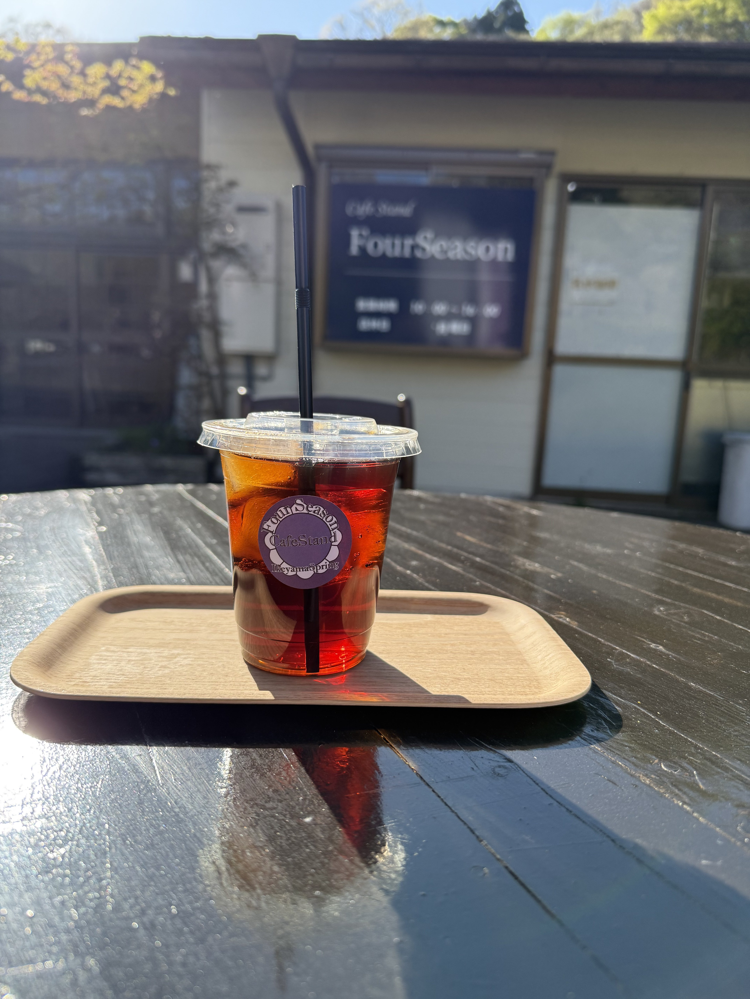
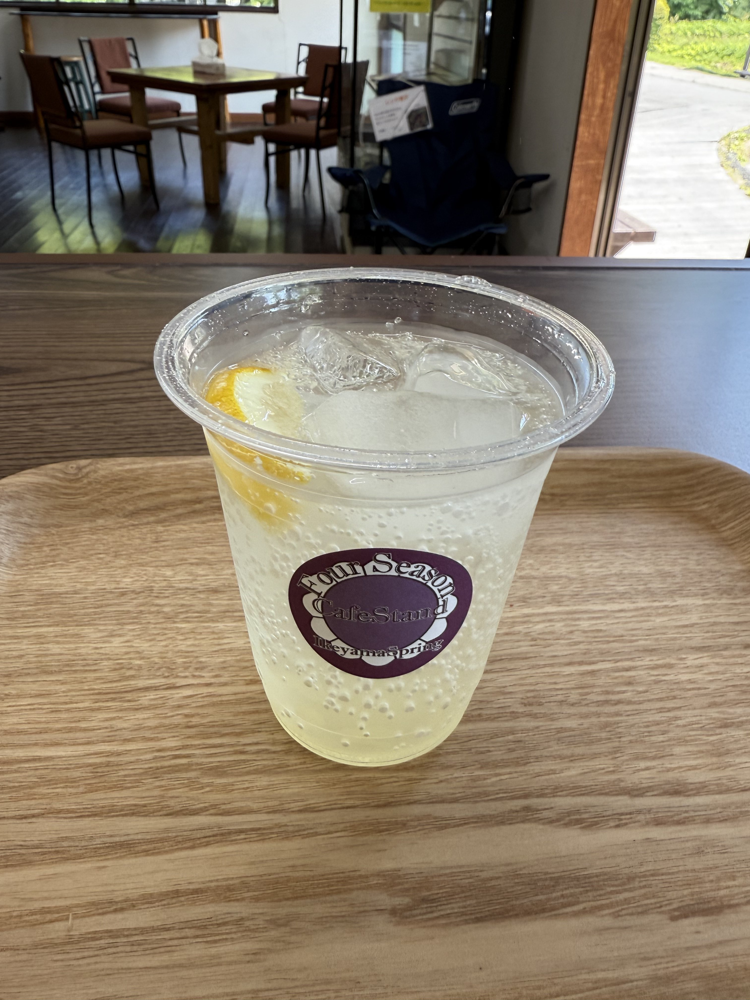
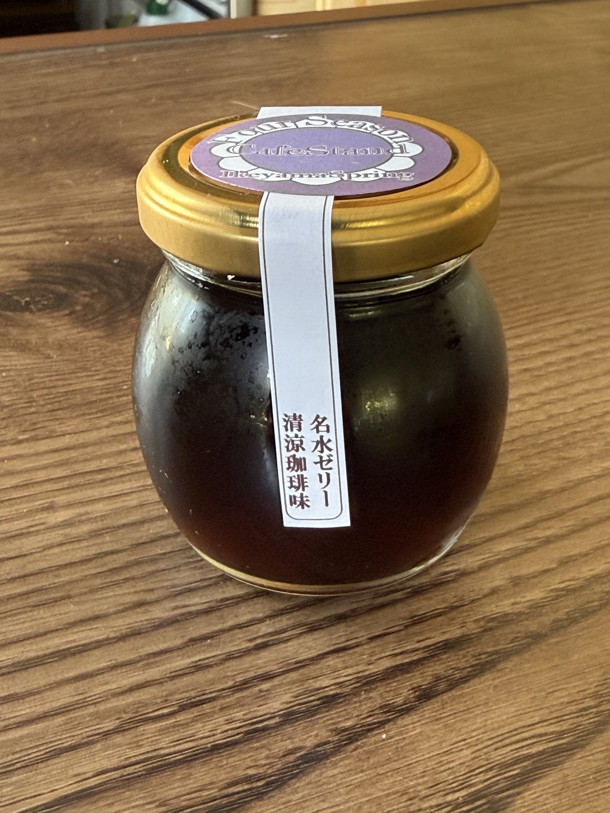

名水を活かした、こだわりのドリンクとスイーツ

池山の名水でじっくり抽出。クリアですっきりとした後味が特徴のアイスコーヒー。
名水で丁寧にドリップした、やわらかくまろやかなホットコーヒー。寒い日にもどうぞ。
名水エスプレッソとミルクのやさしい組み合わせ。ホット・アイスお選びいただけます。

季節の素材を活かした、ここでしか飲めない一杯。内容は季節により変動します。詳細はInstagramをチェック！
池山の名水を使ったさわやかなソーダ。クリアな味わいが名水の良さを引き立てます。

名水の旨みをぎゅっと閉じ込めた、やさしい甘さのデザート。澄んだ見た目も美しい一品。
旬の素材を使ったスペシャルスイーツ。訪れるたびに新しい出会いがあります。
産山村の自然をモチーフにしたオリジナルグッズ。旅のお土産やプレゼントにも最適です。
近隣の神社・仏閣にちなんだオリジナル御朱印帳。発売情報はInstagramにてご案内します。